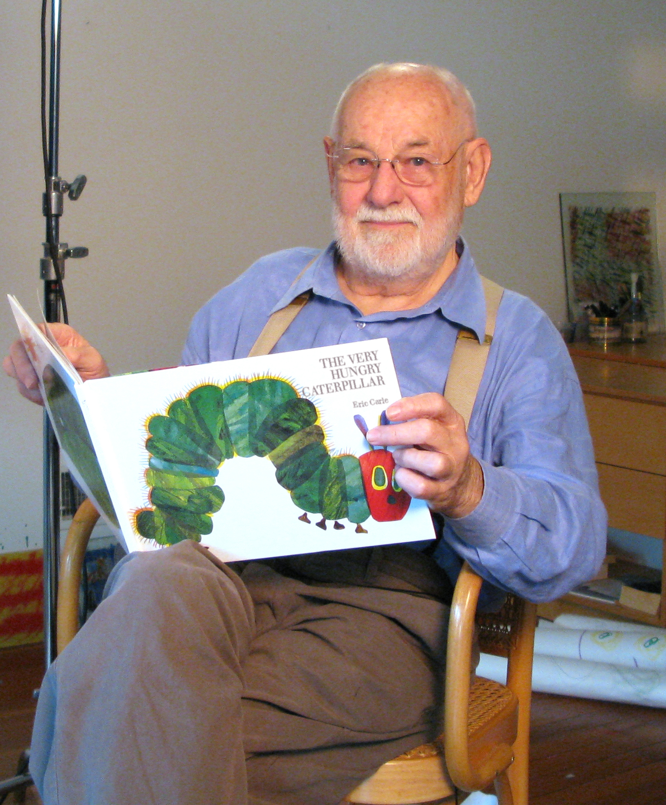

(Source: Biographical Notes for Eric Carle, n.d)
Born in Syracuse, New York, in 1929, Eric Carle moved with his parents to Germany when he was six years old; he was educated there, and graduated from the prestigious art school, the Akademie der bildenden Künste, in Stuttgart. But his dream was always to return to America, the land of his happiest childhood memories. So, in 1952, with a fine portfolio in hand and forty dollars in his pocket, he arrived in New York. Soon he found a job as a graphic designer in the promotion department of The New York Times. Later, he was the art director of an advertising agency for many years. Eric Carle’s art is distinctive and instantly recognizable. His art work is created in collage technique, using hand-painted papers, which he cuts and layers to form bright and cheerful images.
Many of his books have an added dimension—die-cut pages, twinkling lights as in The Very Lonely Firefly, even the lifelike sound of a cricket’s song as in The Very Quiet Cricket - giving them a playful quality: a toy that can be read, a book that can be touched. Children also enjoy working in collage and many send him pictures they have made themselves, inspired by his illustrations. He receives hundreds of letters each week from his young admirers.
One day, respected educator and author, Bill Martin Jr, called to ask Carle to illustrate a story he had written. Martin’s eye had been caught by a striking picture of a red lobster that Carle had created for an advertisement. Brown Bear, Brown Bear, What Do You See? was the result of their collaboration. It is still a favorite with children everywhere. This was the beginning of Eric Carle’s true career. Soon Carle was writing his own stories, too. His first wholly original book was 1,2,3 to the Zoo, followed soon afterward by the celebrated classic, The Very Hungry Caterpillar. The secret of Eric Carle’s books’ appeal lies in his intuitive understanding of and respect for children, who sense in him instinctively someone who shares their most cherished thoughts and emotions. The themes of his stories are usually drawn from his extensive knowledge and love of nature—an interest shared by most small children. Besides being beautiful and entertaining, his books always offer the child the opportunity to learn something about the world around them. It is his concern for children, for their feelings and their inquisitiveness, for their creativity and their intellectual growth that, in addition to his beautiful artwork, makes the reading of his books such a stimulating and lasting experience.
"With many of my books I attempt to bridge the gap between the home and school. To me home represents, or should represent; warmth, security, toys, holding hands, being held. School is a strange and new place for a child..."- (Biographical Notes for Eric Carle, n.d)